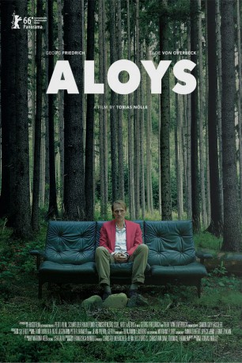

#5782 Aloys
 
 IMDB-Wertung: 6.5 / 10
IMDB-Wertung: 6.5 / 10  Tomatometer: 80
Tomatometer: 80  Metascore: 0
Metascore: 0 
Aloys Adorn ist allein. Sein Vater ist gerade gestorben. Sowohl in der gemeinsamen Wohnung, als auch in der gemeinsamen Privatdetektei muss er nun alleine den Alltag bewältigen. Pflichtbewusst führt Aloys weiterhin Observationen durch und hält alle Nichtigkeiten mit seiner Videokamera fest. Ein Krimi ist immer nur so gut wie sein Ermittler. Aber was passiert, wenn man den Kriminalfall weglässt und nur vom Detektiv erzählt? Die Schweizer Produktion Aloys hat dies gewagt und lässt Georg Friedrich als verklemmten Philip Marlowe der Unterschicht, der selbst in die Mechanismen der Überwachung gerät, brillieren.
Jahr: 2016
Dauer: 90 Minuten
FSK:
Land: Schweiz Studio: Film Kino TextTonspuren:
Untertitel: Englisch,
Auflösung: 1080p (1920x800) Größe: 4280 MB
Genre: Drama, Sci-Fi, Fantasy
Regisseur: Tobias Nölle
Drehbuch: Kim Wilson
Soundtrack:
Darsteller:
 Georg Friedrich als Aloys Adorn
Georg Friedrich als Aloys Adorn- Alexander Seibt als Polizist Lift 1
- Tilde von Overbeck als Vera
- Kamil Krejcí als Herr Schoch
- Yufei Li als Yen Lee
- Koi Lee als Herr Lee
- Sebastian Krähenbühl als Hauswart
- Karl Friedrich als Vater Aloys
- Peter Zumstein als Bestatter
- Agnes Lampkin als Julie Kramer
- Rahel Hubacher als Schwangere Frau
- Haroldo Simao als Drag Queen
- Tobias Bienz als DJ
- Aaron Hitz als Gonzo
- Barblin Leggio-Hänseler als Polizistin Wohnung
- Benjamin Merz als Polizist Lift 2
- Arthur Miranda als Priester
- Marlis Ochsner als Frau im Spital
- Jürg Plüss als Polizist Wohnung
Datei: X:\2016(A-F)\Aloys (2016, FSK, 1920x800).mkv seit 20.03.2017
Festplatte: HD 2016(A-Z)
 Es gibt insgesamt 147 Filme in der Gruppe '2016(A-F)'
Es gibt insgesamt 147 Filme in der Gruppe '2016(A-F)'